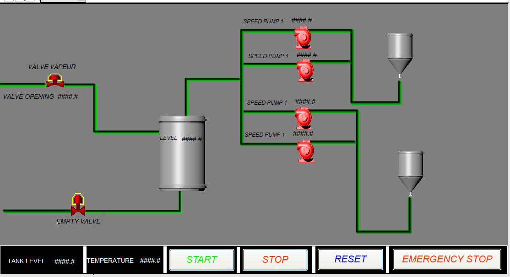
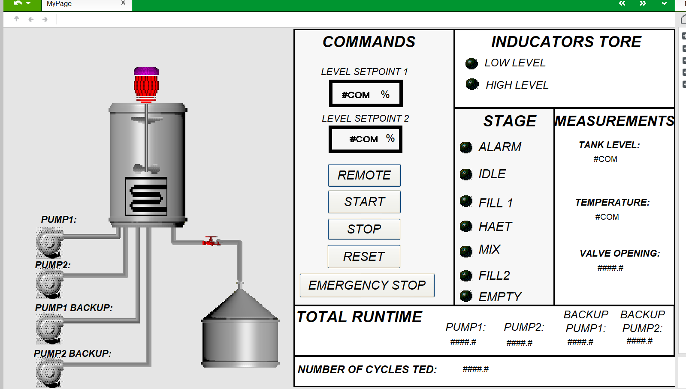

Engineering study / study
M580 process control & AVEVA supervision
A tank-process control study combining pump commands, level, temperature, mixing and supervision.

AVEVA process overview — pumps, tank and transfer commands.
Project objective
Structure the process sequence, alarms, scaling and run-time information for a tank and pump application.
Engineering work
- Control Expert export containing alarm, process-sequence, scaling and run-time sections.
- Operator views for commands, process measurements and operating stages.
- Structured Text scaling excerpt available in the technical library.
Deliverable
A process-control study bringing PLC logic and operator supervision together.
Technical gallery
Inside the project.
Select an image to inspect the drawings, interfaces and equipment.

Continue exploring